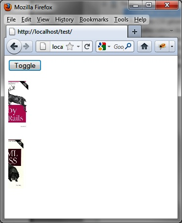

{% include JB/setup %}
{% raw %}
<div>
<div class="book" title="The show (), hide (), and toggle () Methods"><div class="book"><div class="book"><div class="book"><h1 class="title2"><a id="the_show_open_parenthesis_close_parenthe" class="calibre1"></a>The show (), hide (), and toggle () Methods</h1></div></div></div><p class="calibre7">The above effects use the <code class="literal">mode</code>
    option to hide (<code class="literal">"hide"</code>) or display
    (<code class="literal">"show"</code>) the element.</p><p class="calibre7">Rather than specifying this option in the <code class="literal">options</code> parameter, jQuery UI allows us to
    specify it using the <code class="literal">show ()</code> or
    <code class="literal">hide ()</code> methods. As for the <code class="literal">toggle ()</code> method, it toggles the <code class="literal">show ()</code> or <code class="literal">hide
    ()</code> methods depending on whether the element is hidden or
    not.</p><p class="calibre7">Use the following to display an item using the indicated
    effect:</p><a id="I_programlisting14_d1e14767" class="firstname"></a><pre class="programlisting">$(selector, context).show (effectName, options, duration, callback);</pre><p class="calibre7">Use the following to hide an item using the indicated effect:</p><a id="I_programlisting14_d1e14771" class="firstname"></a><pre class="programlisting">$(selector, context).hide (effectName, options, duration, callback);</pre><p class="calibre7">Use the following to change between showing and hiding the indicated
    effect:</p><a id="I_programlisting14_d1e14775" class="firstname"></a><pre class="programlisting">$(selector, context).toggle (effectName, options, duration, callback);</pre><p class="calibre7">For example, let’s use these methods with the <code class="literal">slide</code> effect instead of the <code class="literal">effect ()</code> method that we used before. We create
    a Toggle button, which, when clicked, shows or hides the element by using
    the <code class="literal">slide</code> effect (see <a class="ulink" href="ch14s02.html#using_the_toggle_open_parenthesis_close" title="Figure 14-12. Using the toggle () method">Figure 14-12</a>).</p><div class="book"><div class="figure"><a id="using_the_toggle_open_parenthesis_close" class="firstname"></a><div class="book"><div class="book"><a id="I_mediaobject14_d1e14793" class="firstname"></a></div></div><p class="title4">Figure 14-12. Using the toggle () method</p></div></div><a id="I_programlisting14_d1e14799" class="firstname"></a><pre class="programlisting">&lt;script src = jquery.js&gt;&lt;/script&gt;
&lt;script src = jqueryui/js/jquery-ui-1.8.16.custom.min.js&gt;&lt;/script&gt;

&lt;link rel=stylesheet type=text/css
      href=jqueryui/css/smoothness/jquery-ui-1.8.16.custom.css /&gt;

<span class="firstname"><strong class="userinput">&lt;button onclick=toggle()&gt;Toggle &lt;/button&gt;&lt;br /&gt;&lt;br /&gt;</strong></span>

&lt;img id=img1 src=images/rails.jpg height=100 /&gt;&lt;br /&gt;
&lt;img id=img2 src=images/html.jpg height=100 style=display:none /&gt;

&lt;script&gt;

<span class="firstname"><strong class="userinput">function toggle ()</strong></span>
<span class="firstname"><strong class="userinput">{</strong></span>
  <span class="firstname"><strong class="userinput">$("#img1").toggle ("slide", 10000);</strong></span>
  <span class="firstname"><strong class="userinput">$("#img2").toggle ("slide", 10000);</strong></span>
<span class="firstname"><strong class="userinput">}</strong></span>

&lt;/script&gt;</pre></div></div>

{% endraw %}

